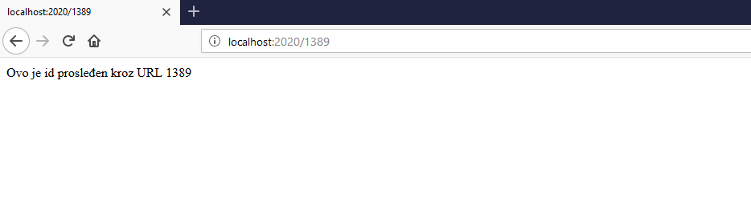
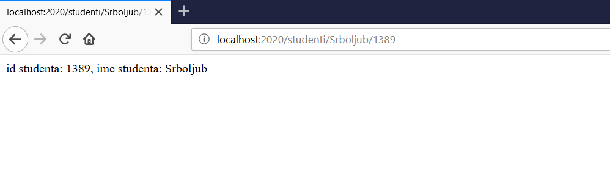
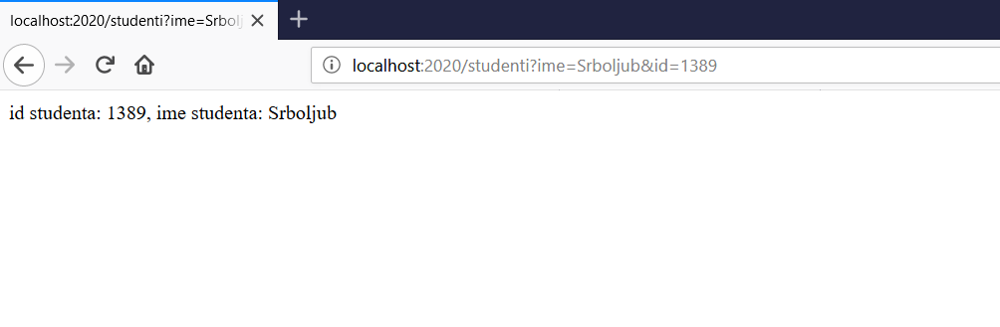
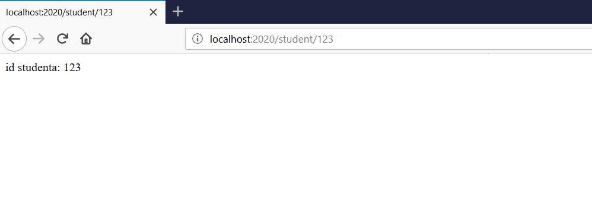

Slanje parametara preko URL
Dinamičke rute
U prethodnoj lekciji objašnjeno je kreiranje statičkih (fiksnih) ruta. Korišćenjem dinamičkih ruta, moguće je prosleđivanje parametara kroz rute.
Sledi prost primer prosleđivanja proizvoljnog broja kroz parametar id
var express = require('express');
var app = express();
app.get('/:id', function(req, res){
res.send('Ovo je id prosleđen kroz URL ' + req.params.id);
});
app.listen(2020);
Poziv testiramo iz pretražovača sa npr.
http://localhost:2020/1389
Prikaz treba da bude kao na slici:

Parametar "1389" može se zameniti bilo sa čim drugim i odgovor će biti odgovarajući.
Složeniji oblici ruta
Sledeći primeri pokazuju kako se može poslati vise parametara kroz URl:
Primer 1:
var express = require('express');
var app = express();
app.get('/studenti/:ime/:id', function(req, res) {
res.send('id studenta: ' + req.params.id + ', ime studenta: ' + req.params.ime);
});
app.listen(2020);
Poziv testiramo iz pretražovača sa npr.
http://localhost:2020/studenti/Srboljub/1389
Prikaz treba da bude kao na slici:

Primer 2:
var express = require('express');
var app = express();
app.get('/studenti', function(req, res) {
res.send('id studenta: ' + req.query.id + ', ime studenta: ' + req.query.ime);
});
app.listen(2020);
Poziv testiramo iz pretražovača sa npr.
http://localhost:2020/studenti?ime=Srboljub&id=1389
Prikaz treba da bude kao na slici:

Simbolom & se pored parametara id i ime može dodati još proizvoljan broj parametara koji će se naći u req.query objektu.
Regularni izrazi
Moguće je primeniti regularne izraze na URL kako bi se vršila selekcija zahteva koji će biti prihvaćeni. Na primer ako pretpostavimo da id mora da bude trocifren broj, to se može definisati na sledeći način:
var express = require('express');
var app = express();
app.get('/student/:id([0-9]{3})', function(req, res) {
res.send('id studenta: ' + req.params.id);
});
app.listen(2020);
Poziv testiramo iz pretražovača sa npr.
http://localhost:2020/student/123
Prikaz treba da bude kao na slici:

Hvatanje nedefinisanih ruta
Ako zahtev ne odgovara ni jednoj definisanoj ruti umesto odgovora "Cannot GET /zahtevana-ruta" može se definisati odgovor sa status kodom 400 (Not found - nije pronađeno) tako što se za rutu ' * ' definiše odgovor:
app.get('*', function(req, res) {
res.send('Neispravan URL');
});
Definisanje odgovora za rutu ' * ' mora biti poslednja definisana ruta u nizu.